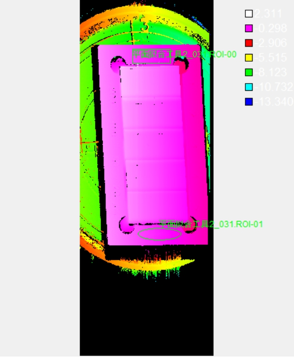
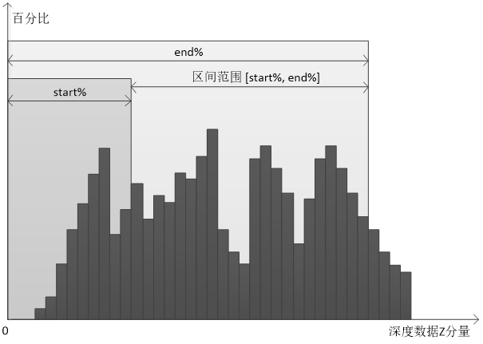
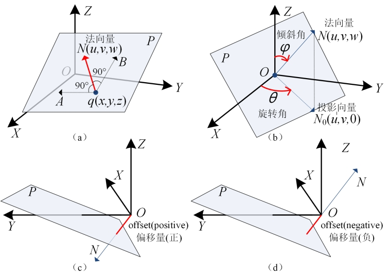

在3D测量中，往往需要对深度图像中检测区域内的三维空间点进行拟合获得一个最优平面，从而能够在这个基平面上进行投影、高度测量和体积测量等后续操作。平面拟合工具2主要是根据若干个三维空间点计算得到三维平面的解析表达式。
图1所示为平面拟合工具2示意图。在平面拟合工具2中，可以对平面拟合区域的形状和特征等进行配置。如图1所示，总共有两个拟合区域，这两个区域的形状分别是矩形、椭圆形，可以用这两个区域内的特征点（如均值、中值等）或者所有数据来拟合平面。平面拟合工具2对实际项目中，基平面形成方式的多样化提供了支持。

| 分类 | 参数名称 | 参数描述 |
|---|---|---|
| 属性窗口 | 平面方向 | 分为两种：正像素空间和负像素空间。 |
| ROI数量 | 该参数指定用于拟合平面的ROI数量，最多支持100个ROI。 | |
| ROI索引 | 该参数用于选择第i个拟合区域，并对其参数进行设置。 | |
| ROI类型 | 待拟合区域，分为7种：整幅图像、矩形、仿射矩形、圆形、圆环段、椭圆、多边形。 | |
| 拟合点 | 选取ROI区域内的某种特征点进行平面拟合，分为6种：均值、中值、质心、Z最大、Z最小、所有数据。 | |
| 区间上、下限 | 拟合区域的深度数据按照Z分量从小到大排序，然后再获取位于start% ~ end%的深度数据的均值，中值等特征点。取值范围为下限[0,100)，上限(0,100]，且下限小于上限。 |
|
| 图像窗口 | 深度图像 | 显示待检测的深度图像，显示为伪彩色图像。 |
| 拟合区域 | 在图像上显示待拟合区域。 | |
| 数据链 | 深度图像 | 输入待检测的深度图像。 |
| 二维线性变换 | 目标相对于模板的平移、旋转、缩放变换。 | |
| 高级界面 | 无 | 无 |
| 分类 | 参数名称 | 参数描述 |
|---|---|---|
| 监视窗口 | 深度图像 | 深度图像的长宽和像素大小，以及深度数据参数。 |
| 拟合平面 | 输出拟合平面结果，包括平面的法向量、偏移量、倾斜角、旋转角。 |
|
| 平面度 | 输出平面的平面度，即最大偏移-最小偏移。 | |
| 拟合误差 | 输出平面的拟合误差。 | |
| 平面拟合的点数 | 输出平面拟合中参与拟合的点数。 | |
| 执行结果 | 工具执行结果。 | |
| 执行时间 | 工具执行时间。 | |
| 图像窗口 | 输出图像 | 显示检测的深度图像，显示为伪彩色图像。 |
| 数据链 | 同监视窗口参数，供后续工具使用。 |
设区间范围为[start%, end%]，则只有位于区间范围内的数据才是有效的；如图2所示，当对拟合区域进行参数配置时，将区域内的深度数据按照Z分量从小到大进行排序，然后再获取位于start% ~ end%的深度数据的均值，中值等特征点。

法向量：垂直于平面的向量N，表示平面在三维空间中的方向，如图3(a)所示。
倾斜角：Z轴正方向按顺时针方向与平面法向量N的夹角φ，取值范围为：[0,π] ，如图3(b)所示。
旋转角：X轴正方向按逆时针方向与法向量的投影向量N0的夹角θ，取值范围为：[0, 2π) ，如图3(b)所示。
偏移量：将原点移动到当前平面P上的距离偏移，若移动方向与法向量方向相同，偏移量为正；否则为负，如图3©、(d)所示。

Step 1 设置拟合区域
主要需要对拟合区域的个数、形状、区域内的特征点类型和区间的范围进行设置。其中，用户可自行指定用于拟合的ROI数量；拟合区域的形状分为7种：整幅图像、矩形、仿射矩形、圆形、圆环、椭圆、多边形；拟合区域内的特征点类型分为6种：均值、中值、质心、Z最大、Z最小、所有数据。
Step 2 执行拟合和输出结果
在设置好拟合区域后，就可以执行平面拟合，输出的结果包括：平面的法向量、偏移量、倾斜角和旋转角，拟合的RMS误差，以及拟合平面所使用的三维点数目。
参见“\Samples\3D\深度图\3D测量工具.gvp”。